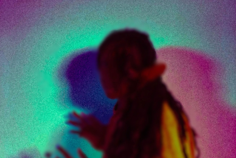

what’s on
Thu 12 Oct 2023
Desire Marea
[South Africa]

Thu 12 Oct 2023
Pumpitopera transatlantica
[Brazil]
“Transform has changed the way audiences experience Leeds”
what’s new

One month to go — With one month to go until Transform 23, we’re today announcing a series of new commissions, DJ sets and immersive encounters to deepen your experience of the festival.

If walls could talk — Opening the festival alongside Ásrún Magnúsdóttir’s SECRETS, Transform’s Young Curators present IF WALLS COULD TALK.
opportunities
Sottobosco: workshop call out
Volunteer call out
Join the distorded rap choir